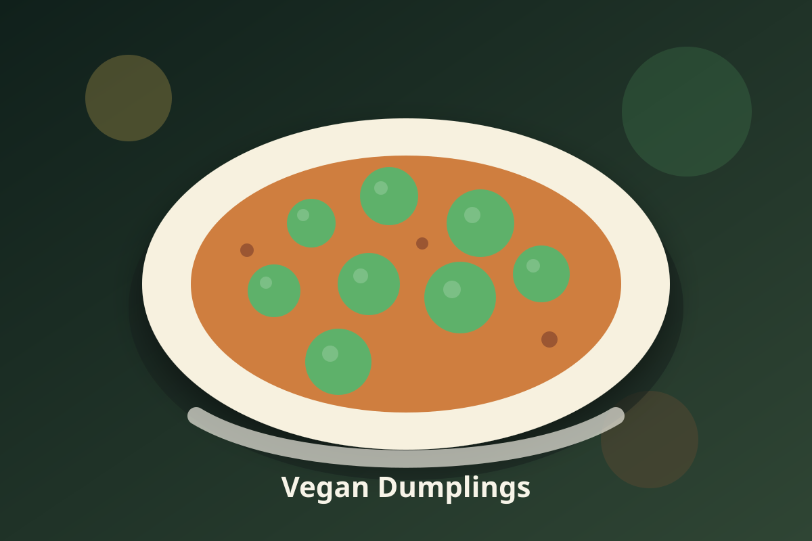

Jamaican · Vegan
Vegan Dumplings
A vegan Jamaican staple built for weeknight cooking and appliance-friendly instructions.

Ingredients
- 2 cups all-purpose flour
- 2 teaspoons baking powder
- 1/2 teaspoon sea salt
- 1 cup water, plus 1 to 2 tablespoons more as needed
- 2 cloves garlic, minced
- 1 teaspoon fresh thyme leaves
- 1/2 teaspoon ground allspice
- 1 tablespoon lime juice
Instructions
- Mix dough until soft.
- Shape small dumplings.
- Add 1 cup water to the Instant Pot inner pot, set dumplings on a steamer rack, and steam until cooked through; or simmer in stew until tender.
- Finish with lime juice and fresh herbs to brighten the flavor.